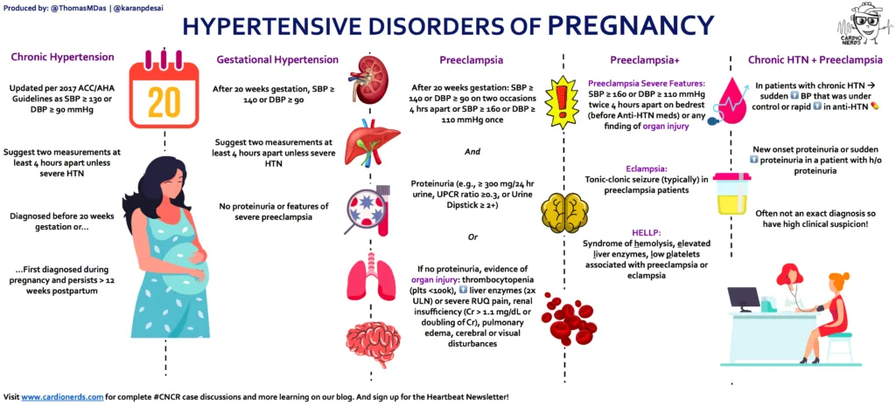

Expanded Nursing Uganda Explanation
Essential Hypertension should be reviewed through safe maternal and newborn assessment, early recognition of danger signs, respectful communication and timely referral. Connect the definition to vital signs, bleeding, fetal or newborn wellbeing, patient education and local protocol requirements.
Contents, 29 sections (tap to expand)
01 Nursing Uganda Snapshot
Hypertension is persistent high blood pressure. It is dangerous because many patients feel well while blood vessels, heart, brain, kidneys and eyes are being damaged.
02 Build The Idea
Separate chronic control from emergency care. Routine hypertension needs long-term lifestyle and medicine adherence; severe symptomatic hypertension needs urgent escalation.
- Primary hypertension: no single clear cause.
- Secondary hypertension: linked to another condition.
- Pregnancy hypertension: assess mother and fetus together.
- Complications: stroke, heart failure, renal disease and retinopathy.
03 Ward Mode
A single high BP reading should be repeated correctly before action, unless the patient has danger signs.
- Use correct cuff size and position arm at heart level.
- Repeat measurement and document time, arm and position.
- Ask about headache, visual changes, chest pain, dyspnoea, weakness and pregnancy.
- Check adherence, salt intake, alcohol, weight and comorbidities.
04 Red Flags
- Severe headache.
- Blurred vision.
- Chest pain.
- Shortness of breath.
- Weakness on one side.
- Convulsions in pregnancy.
- Reduced urine output.
05 Patient Teaching
- Take medicines even when feeling well.
- Reduce salt, stop smoking, limit alcohol and keep follow-up appointments.
- Seek urgent care for chest pain, severe headache, weakness, breathlessness or visual changes.
06 Exam Answer Map
- Define hypertension.
- Classify types.
- List risk factors and complications.
- Explain assessment and management.
- Add patient education and follow-up.
07 ESSENTIAL HYPERTENSION IN PREGNANCY
Apart from Pregnancy Induced Hypertension (PIH), Essential Hypertension is the most common hypertensive state in pregnancy. This is primary hypertension where the blood pressure is raised over 140/90mmHg during the first 20 weeks of pregnancy. It’s usually present before pregnancy. It doesn’t present with any proteinuria as in severe preeclampsia.
Essential hypertension in pregnancy refers to high blood pressure that develops before pregnancy or within the first 20 weeks of gestation and persists throughout pregnancy .
08 Classifications of Essential Hypertension
Hypertension, or high blood pressure, can be categorized into three levels based on the diastolic blood pressure reading:
- Mild Hypertension : Diastolic blood pressure between 95 and 105 mmHg.
- Moderate Hypertension : Diastolic blood pressure between 105 and 115 mmHg.
- Severe Hypertension : Diastolic blood pressure above 115 mmHg.
09 Causes of Essential Hypertension
The exact causes of essential hypertension are not fully understood .
Factors that may contribute to the development of essential hypertension include;
1. Genetics : Family history of hypertension significantly increases the risk. Studies have identified specific genes associated with the condition.
2. Lifestyle Factors :
- High Sodium Intake : Excessive salt consumption can contribute to fluid retention and increased blood pressure.
- Low Potassium Intake : Adequate potassium is essential for regulating blood pressure, and low levels can contribute to hypertension.
- Obesity : Excess body weight increases the workload on the heart and blood vessels, leading to higher blood pressure.
- Physical Inactivity : Lack of regular exercise can contribute to weight gain and cardiovascular problems, including hypertension.
- Smoking : Nicotine constricts blood vessels, raising blood pressure.
- Excessive Alcohol Consumption : Heavy drinking can damage blood vessels and increase blood pressure.
- Stress : Chronic stress can trigger the release of hormones that increase blood pressure.
3. Underlying Medical Conditions:
- Kidney Disease : Kidney problems can impair the body’s ability to regulate blood pressure.
- Thyroid Disorders : Hyperthyroidism can lead to increased heart rate and blood pressure.
- Sleep Apnea : Disrupted sleep patterns can raise blood pressure.
- Diabetes : Diabetes can damage blood vessels and increase the risk of hypertension.
10 SIGNS AND SYMPTOMS
Essential hypertension is often referred to as the “ silent killer ” because it most of the time doesn’t cause noticeable symptoms in its early stages. This makes it even more dangerous because damage to the heart, blood vessels, and other organs can occur without any warning signs.
- Raised blood pressure of 140/90mmHg or more in early pregnancy: This indicates elevated blood pressure readings, specifically a systolic pressure (top number) of 140 mmHg or higher and/or a diastolic pressure (bottom number) of 90 mmHg or higher.
- Headaches : High blood pressure can cause persistent, throbbing headaches, often at the back of the head or temples.
- Shortness of breath : Hypertension can lead to fluid buildup in the lungs, making it difficult to breathe.
- Chest discomfort : The strain on the heart from high blood pressure can cause chest pain or tightness.
- Sleep disturbances : Hypertension may contribute to sleep apnea and other sleep problems.
- Palpitations and tachycardias : High blood pressure can cause an irregular or rapid heartbeat.
- Fluid retention : Hypertension can lead to fluid buildup in the body, causing swelling in the legs, ankles, and feet.
- Blurred vision : Damage to the blood vessels in the eyes is a potential complication of hypertension.
- Nausea or vomiting : Nausea and vomiting in hypertensive pregnancies can occur due to generalized malaise or as a response to the stress placed on the body by elevated blood pressure.
- Fatigue and loss of energy : The strain on the cardiovascular system from high blood pressure can lead to feelings of tiredness and low energy.
11 Management of Essential hypertension
Elevated blood pressure is usually caused by a combination of several abnormalities such as psychological stress , genetic inheritance , environmental and dietary factors and others. Patients in whom no specific cause of hypertension can be found are said to have essential hypertension or primary hypertension (accounts for 80-90 % of cases).
The choice of therapy of a patient with hypertension depends on a variety of factors: age , sex , race , body build , life-style of the patient , cause of the disease , other coexisting disease, rapidity of onset and severity of hypertension , and the presence or absence of other risk factors for cardiovascular disease (e.g. smoking, alcohol consumption, obesity, and personality type).
The aims/principles of management are:
- To stabilize the blood pressure to below 130/90 mm Hg.
- To prevent superimposition of preeclampsia.
- To monitor maternal and fetal well-being.
- To terminate the pregnancy at the optimal time.
History Taking :
- A thorough history should be taken for all mothers in the ANC Clinic to rule out essential hypertension (HT) in families.
- This helps in early identification and management of at-risk mothers.
Blood Pressure and Urine Testing :
- Regular and careful monitoring of blood pressure (BP) and urine testing is essential.
- This helps in the early detection of any deviations from normal parameters.
Condition Management :
- This condition is managed in the maternity centre (m/c) by midwives.
- All mothers with signs of hypertension should be referred to a hospital for further management.
Non pharmacological therapy of hypertension
- Low sodium chloride diet Weight reduction.
- Exercise.
- Cessation of smoking.
- Psychological methods (relaxation, meditation …etc).
- Dietary decrease in saturated fats.
- Decrease in excessive consumption of alcohol.
12 Mild Cases
Blood Pressure Range :
- Mild cases are defined by blood pressure between 140/90 mmHg and 150/100 mmHg.
Antenatal Clinic Visits:
- Patients should attend the Antenatal Clinic regularly every two weeks and be seen by a doctor.
- Close monitoring of blood pressure and urine for albumin is necessary.
- Weight checks and observation for edema should be conducted at every visit.
Fetal Monitoring:
- Fetal growth and well-being should be carefully monitored to ensure normal development.
- Excessive weight gain in the mother increases the risk of pre-eclampsia.
Medication :
- Hypertensive drugs are usually not necessary for mild cases.
- A sedative like Phenobarbital 30-60 mg nocte may be prescribed to reduce anxiety and ensure adequate rest.
Admission and Rest:
- Mother is admitted at 36 weeks for rest in preparation for labor.
- If blood pressure rises above 150/100 mmHg or there is albumin in the urine, immediate admission is required.
Advice on Diet and Rest:
- Reduce intake of fats and carbohydrates, and avoid additional salt.
- Ensure 10 hours of rest at night and 2 hours in the afternoon.
- Avoid alcohol, smoking, and constipation.
13 Severe Cases
Admission:
- Mother is admitted to the hospital and the doctor is informed.
- Routine history taking, observation, and examination are conducted.
Urine and Blood Tests:
- A mid-stream urine test is conducted to rule out albumin and check for pus cells and white blood cells.
- Blood tests for blood urea are also performed.
Observation for Edema:
- Examination for the presence of edema is necessary.
- The mother is put on complete bed rest.
14 Nursing Care
Bed Rest:
- Mother remains in bed for most of the day, with occasional sitting for relaxation.
- The midwife provides a bedpan and brings necessities to the mother.
Hygiene :
- Bed baths and vulva toilets are carried out every 4 hours.
- Position changes and treatment of pressure areas are done 4-hourly.
- Oral hygiene is maintained every 4 hours.
- Bed linen is changed daily.
Diet :
- A salt-free, light, and nourishing diet with plenty of proteins is provided.
- Strict control of fluid intake to reduce and prevent edema.
Observations:
- Temperature, pulse, respiration, and BP are checked every 4 hours.
- Daily urine checks to rule out edema.
- Fetal heart rate and growth are checked twice daily to rule out anoxia and intrauterine fetal death.
- Placenta functional tests for efficiency.
15 Medical Treatment
Hypertensive Drugs:
- Methyldopa, is the drug of choice during pregnancy, effective and safe for the mother and fetus. (Dosages below)
- Indomethacin or methyldopa 250-750 mg orally as per the doctor’s prescription.
- Hydralazine 1-4 mg twice a day.
- Sedatives like Valium 5-10 mg 8-hourly.
- Diuretics like furosemide.
- Nifedipine 5 mg sublingually.
16 Obstetrical Management
Labor Induction:
- Hypertensive mothers are not allowed to carry pregnancy to term.
- In mild to moderate cases, labor is induced at about 38 weeks of gestation.
- In severe cases, labor is induced at about 36 weeks of gestation.
First Stage of Labor:
- Careful observations at 30-minute intervals.
- BP checked every 2 hours or more frequently as ordered by the doctor.
- Fetal heart rate checked every 30 minutes.
Second Stage of Labor:
- Preparation may include additional equipment like vacuum extraction.
- A large episiotomy is given to prevent maternal exhaustion.
- Caesarean section may be done if progress is slow to avoid eclampsia.
Third Stage of Labor:
- Injection of morphine 15 mg upon completion of labor.
- Pitocin 10 IU in a drip.
17 Effects of Hypertension During Pregnancy
- Abortion
- Pre-eclampsia: Frequent complication with development of edema and proteinuria.
- Eclampsia
- Abruptio Placenta
- Maternal Mortality
- Renal Complications: Acute renal failure.
18 Effects of Hypertension During Labor
- Premature Labor
- Eclampsia
- Poor Progress: Assisted delivery by vacuum extraction.
- Cerebral Damage
- Heart Failure
19 Effects of Hypertension During Puerperium
- Low Resistance to Infection
- Anemia
- Postpartum Hemorrhage
- Fits
20 Effects of Hypertension on Baby
- Intrauterine Fetal Growth Retardation: Due to placental insufficiency.
- Prematurity
- Hypoxia and Anoxia
- Abruptio Placenta
- Asphyxia at Birth: Due to maternal cyanosis.
- Mental Retardation
- Deformity
21 Nursing Care Plan for a Patient with Essential Hypertension
- Assessment Diagnosis Planning (Goals/Expected Outcomes) Implementation Rationale Evaluation
- 1. Elevated blood pressure reading of 150/95 mmHg. 2. Complains of headache and dizziness. 3. Family history of hypertension. 4. Patient’s diet includes high sodium intake. 5. Sedentary lifestyle. Hypertension related to lifestyle factors and genetic predisposition evidenced by blood pressure reading of 150/95 mmHg. Short Term: – Reduce blood pressure to below 140/90 mmHg within one week. – Patient will verbalize understanding of the importance of dietary and lifestyle modifications within three days. Intermediate Term: – Blood pressure maintained between 120/80 mmHg and 130/85 mmHg within one month. Long Term: – Patient will adopt a healthier lifestyle, including a balanced diet and regular exercise, to maintain blood pressure within normal limits (<120/80 mmHg) within six months. – Monitor blood pressure twice daily and record readings. – Educate patient on the DASH diet (Dietary Approaches to Stop Hypertension). – Encourage reduction of sodium intake to less than 2,300 mg per day. – Advise patient to engage in at least 30 minutes of moderate-intensity exercise, such as brisk walking, five days a week. – Administer antihypertensive medications as prescribed by the doctor. – Discuss stress management techniques, such as deep breathing exercises and meditation. – Regular monitoring helps track progress and adjust interventions as needed. – The DASH diet is proven to reduce blood pressure. – Reducing sodium intake helps lower blood pressure. – Regular exercise strengthens the heart and improves blood circulation, which can lower blood pressure. – Medications help control blood pressure levels. – Stress management can reduce blood pressure by calming the nervous system. – Blood pressure reduced to 138/88 mmHg within one week. – Patient accurately explains the importance of dietary and lifestyle changes after three days. – Blood pressure maintained at 125/82 mmHg after one month. – Patient reports regular adherence to a healthier lifestyle and maintains blood pressure at 118/78 mmHg after six months.
- 1. Complaints of headache and dizziness. 2. Elevated blood pressure reading of 150/95 mmHg. Acute pain related to increased blood pressure evidenced by patient complaints of headache. Short Term: – Patient will report a decrease in headache severity within one hour of intervention. Intermediate Term: – Patient will report fewer headaches within one month. – Assess pain level using a 0-10 pain scale. – Administer prescribed analgesics for headache relief. – Encourage rest in a quiet, dark room. – Teach relaxation techniques, such as deep breathing or guided imagery. – Pain assessment helps in determining the effectiveness of interventions. – Analgesics can provide immediate relief from headache. – A quiet environment reduces stimuli that may exacerbate headache. – Relaxation techniques can help reduce pain perception. – Patient reports headache severity reduced from 8/10 to 2/10 within one hour. – Patient reports fewer and less severe headaches after one month.
- 1. Family history of hypertension. 2. Elevated blood pressure reading of 150/95 mmHg. Knowledge deficit related to lack of information about hypertension management evidenced by patient questions about diet and exercise. Short Term: – Patient will demonstrate understanding of hypertension management by correctly answering questions about diet and exercise within one week. Long Term: – Patient will implement lifestyle changes to manage hypertension within three months. – Provide educational materials on hypertension and its management. – Review the importance of medication adherence. – Demonstrate how to monitor blood pressure at home. – Discuss the role of diet, exercise, and stress management in controlling blood pressure. – Education empowers the patient to take an active role in managing their condition. – Understanding medication importance improves adherence. – Home monitoring provides immediate feedback on lifestyle changes. – Knowledge of lifestyle factors helps in making informed decisions. – Patient correctly answers questions about diet and exercise within one week. – Patient implements and adheres to recommended lifestyle changes, as evidenced by improved blood pressure readings within three months.
- 1. Patient’s diet includes high sodium intake. 2. Elevated blood pressure reading of 150/95 mmHg. Imbalanced nutrition: more than body requirements related to excessive sodium intake evidenced by elevated blood pressure. Short Term: – Patient will identify high-sodium foods to avoid within one week. Intermediate Term: – Patient will reduce daily sodium intake to less than 2,300 mg within one month. – Provide a list of high-sodium foods to avoid. – Teach label reading to identify sodium content in packaged foods. – Suggest healthier food alternatives. – Encourage cooking at home using fresh ingredients. – Identifying high-sodium foods helps in making healthier choices. – Label reading educates on hidden sodium sources. – Healthier alternatives can reduce overall sodium intake. – Home-cooked meals allow better control of ingredients. – Patient identifies high-sodium foods correctly within one week. – Patient reports reduced sodium intake and improved dietary habits within one month.
- 1. Sedentary lifestyle. 2. Elevated blood pressure reading of 150/95 mmHg. Activity intolerance related to sedentary lifestyle evidenced by complaints of fatigue and shortness of breath on exertion. Short Term: – Patient will verbalize the importance of physical activity in managing hypertension within one week. Intermediate Term: – Patient will engage in 30 minutes of moderate-intensity exercise five days a week within one month. – Assess current activity level and limitations. – Develop an individualized exercise plan starting with low-impact activities. – Encourage gradual increase in physical activity duration and intensity. – Monitor patient’s response to activity and adjust plan as needed. – Understanding current activity level helps in setting realistic goals. – An individualized plan ensures activities are appropriate and safe. – Gradual increase in activity prevents injury and encourages adherence. – Monitoring response ensures safety and effectiveness of the plan. – Patient verbalizes understanding of the importance of physical activity within one week. – Patient consistently engages in regular exercise, as evidenced by improved stamina and blood pressure readings within one month.
- Pharmacological Therapy of Hypertension Most patients with hypertension require drug treatment to achieve a sustained reduction in blood pressure. Currently available drugs lower blood pressure by decreasing either cardiac output or total peripheral vascular resistance, or both. Anti-hypertensive drugs are classified according to the principal regulatory site or mechanism on which they act. They include: A) Diuretics Diuretics lower blood pressure by depleting the body’s sodium and reducing blood volume. They are effective in lowering blood pressure by 10-15 mmHg in most patients. Diuretics include: 1. Thiazides and Related Drugs Examples: hydrochlorothiazide, bendrofluazide, chlorthalidone Mechanism: Initially, thiazide diuretics reduce blood pressure by reducing blood volume and cardiac output due to increased urinary water and electrolyte (particularly sodium) excretion. With chronic administration (6-8 weeks), they decrease blood pressure by decreasing peripheral vascular resistance as the cardiac output and blood volume return to normal values. 2. Loop Diuretics Examples: furosemide, ethacrynic acid Mechanism: Loop diuretics are more potent than thiazides. The antihypertensive effect is mainly due to the reduction of blood volume. They are indicated in cases of severe hypertension associated with renal failure, heart failure, or liver cirrhosis. 3. Potassium-Sparing Diuretics Examples: spironolactone Mechanism: Used as adjuncts with thiazides or loop diuretics to avoid excessive potassium depletion and enhance the effect of other diuretics. The diuretic action of these drugs is weak when administered alone. B) Direct Vasodilators These include arterial vasodilators and arteriovenous vasodilators. 1. Arterial Vasodilators Example: hydralazine Mechanism: Dilates arterioles but not veins. It is used particularly in severe hypertension. Side Effects: Common adverse effects include headache, nausea, anorexia, palpitations, sweating, and flushing. 2. Arteriovenous Vasodilators Example: sodium nitroprusside METHYLDOPA Mechanism of Action : Central/peripheral antiadrenergic action resulting in decreased arterial pressure. Dose : 250 mg – 500 mg orally. Indications : Hypertension, pre-eclampsia. Contraindications : Hepatic disorders, psychiatric patients, congestive heart failure, postpartum depression. Side Effects : Hemolytic anemia, sodium retention, nausea, vomiting, diarrhea, constipation, weight gain, depression, dizziness, headache, fetal intestinal ileus. Nursing Considerations : Monitor blood values of neutrophils and platelets. Monitor blood pressure before beginning treatment, periodically, and after. Patient Instructions: Store tablets in tight containers. Avoid hazardous activities. Take the tablet one hour before meals. Do not stop the drug unless directed by a physician. Rise slowly to minimize orthostatic hypotension. HYDRALAZINE Mechanism of Action : Peripheral vasodilation as it relaxes the arterial smooth muscles. It increases cardiac output and renal blood flow. Indications : Essential hypertension. Dose : Orally: 100 mg/day in 4 divided doses. Intravenously: 5-10 mg every 20 minutes with a maximum of 20 mg. Side Effects : Hypotension, tachycardia, fluid retention, muscle cramps, headache, depression, anorexia, diarrhea, neonatal thrombocytopenia. Contraindications : Rheumatic heart disease. Nursing Considerations: Monitor BP every 15 minutes for 2 hours, then hourly for 2 hours, then 4-hourly. Monitor fluid intake and output. Take weight daily. Administer in a recumbent position and keep the patient in that position for 1 hour after administration. Evaluate for edema, assess skin turgor, and monitor for dyspnea, orthopnea, joint pains, headaches, and palpitations. Patient Instructions: Take with food to increase bioavailability. Notify the doctor if there is chest pain, severe fatigue, muscle or joint pains. LABETALOL Mechanism of Action : Decreases systemic arterial blood pressure and systemic vascular resistance due to its combined alpha and beta-adrenergic blocking activity. Indications : Hypertension, hypertensive emergencies. Dose : Orally: 100 mg three times daily. IV infusion: 20-40 mg every 10-15 minutes until the desired effect is achieved in a hypertensive crisis. Contraindications : Hepatic disorders, asthma, congestive heart failure. Side Effects : Tremors, headache, asthma, congestive cardiac failure, sodium retention, postural hypotension. Nursing Considerations : Assess urine input and output. Take weight daily. If given intravenously, keep the patient in a recumbent position for 3 hours. Check for edema of legs and feet. Assess skin turgor and mucous membrane dryness for hydration status. Patient Instructions : Take the tablet orally before food. Do not discontinue the drug abruptly. Report bradycardia, dizziness, confusion, or depression. Avoid alcohol, smoking, and excess sodium intake. Take medication at bedtime to prevent the effect of orthostatic hypotension. NIFEDIPINE Mechanism of Action : Dihydropyridine calcium channel blocker. Direct arterial vasodilator by inhibiting the slow inward calcium channel in vascular smooth muscles. Reduces muscle contractility. Dose : Orally: 5-10 mg three times daily. Tocolytic dose: Initial dose of 20 mg orally, followed by 20 mg orally after 30 minutes. If contractions persist, continue with 20 mg orally every 3-8 hours for 48-72 hours with a maximum dose of 160 mg/day. Long-acting nifedipine (30-60 mg daily) can be used after 72 hours if maintenance is still required. Indications : Hypertension, angina pectoris, preterm labor. Contraindications : Simultaneous use with magnesium sulfate due to synergistic effects. Side Effects: Flushing, hypotension, headache, tachycardia, inhibition of labor, fatigue, nausea and vomiting, drowsiness. Nursing Considerations : Administer before meals. Patient Instructions : Limit caffeine consumption. PROPRANOLOL Mechanism of Action : Sympatholytic non-selective beta-blocker that decreases preload and afterload, reducing left ventricular end-diastolic pressure and systemic vascular resistance. Indications : Hypertension. Contraindications : Bronchial asthma, diabetes mellitus, cardiac failure. Side Effects : Severe hypotension, sodium retention, bradycardia, bronchospasms, intrauterine growth restriction (IUGR) with prolonged therapy, headache. Dose : 80-240 mg once daily orally. Nursing Considerations : Assess BP, pulse, and respirations during treatment therapy. Take weight often and report excess weight gain. Evaluate tolerance if taken for long periods. Evaluate for headaches. Patient Instructions : Take with plenty of water on an empty stomach. Make position changes slowly to prevent fainting. Common Diuretics Used FRUSEMIDE Type : Loop diuretic. Mechanism of Action : Acts on the loop of Henle to prevent the reabsorption of sodium and potassium. Dose : Oral: 10 mg/mL, 40 mg/5 mL. Injection: 10 mg/mL. Tablet: 20 mg, 40 mg, 80 mg. Indications : Pregnancy-induced hypertension, eclampsia with pulmonary edema. Contraindications : Anuria, hypersensitivity to the drug. Side Effects : Fatigue, muscle cramps, hypokalemia, fetal compromise. Anticonvulsants Magnesium Sulphate Mechanism of Action : Competitive inhibition to calcium ions either at the motor end plate or at the cell membrane, reducing calcium influx and directly acting on uterine muscles and motor plate sensitivity. Indications : Premature rupture of membranes, active labor, planned delivery within 24 hours, prevention or control of seizures in pre-eclampsia, hypomagnesemia. Dose Regimen : Loading Dose: Maintenance Dose: 5 g IM 4 hourly on alternate buttocks, or 1-2 g/hr IV infusion. Route of Administration Loading Dose Maintenance Dose
- Intramuscular 4 g IV over 3-5 minutes, followed by 10 g deep IM. 5g 4 hourly on alternate buttocks
- Intravenous 4-6g i.v over 15-20 minutes 1-2 g/hr i.v infusion
- Side Effects : Flushing, nausea, vomiting, headache, blurred vision, respiratory depression.
- Contraindications : Impaired renal function.
22 Diazepam
- Mechanism of Action: Depresses subcortical levels of the CNS.
- Dose :
- Orally: 2-10 mg three to four times daily.
- IV: 5-20 mg bolus, may repeat in 30 minutes if seizures reappear.
- Side Effects : Hypotension, dizziness, drowsiness, headache, respiratory depression, birth hypotonia, thermoregulatory problems in the newborn.
23 Phenytoin
- Mechanism of Action: Prolongs the inactivation state of sodium channels, reducing the likelihood of repetitive discharge.
- Indications : Prevention and control of seizures in pre-eclampsia and eclampsia, status epilepticus.
- Side Effects : Sedation, cleft palate (in fetuses).
24 Heparin Sodium
- Mechanism of Action : Prevents the conversion of fibrinogen to fibrin.
- Indications : Deep vein thrombosis, thromboembolism, disseminated intravascular coagulation, patients with prosthetic valves in the heart.
- Action : Interferes with blood clotting by direct means, depressing hepatic synthesis of vitamin K-dependent coagulation factors.
25 Treatment of Shock
Shock is a clinical syndrome characterized by decreased blood supply to tissues. Signs and symptoms include oliguria, heart failure, disorientation, mental confusion, seizures, cold extremities, and coma. Most, but not all, people in shock are hypotensive. The treatment varies with the type of shock. The choice of drug depends primarily on the pathophysiology involved.
- Anaphylactic Shock or Neurogenic Shock : Characterized by severe vasodilation and decreased PVR, a vasoconstrictor drug (e.g., levarterenol) is the first drug of choice.
- Hypovolemic Shock : Intravenous fluids that replace the type of fluid lost should be given.
- Septic Shock : Appropriate antibiotic therapy in addition to other treatment measures
26 Nursing Uganda Clinical Lens
Use Essential Hypertension as a practical nursing topic, not only a memorized definition. Read the topic through the safety of two patients: the mother and the fetus or newborn.
- What to understand first: define essential hypertension, identify the normal or expected pattern, then explain what changes when the patient is unwell.
- Why it matters in care: the nurse must recognize risk early, explain findings clearly, document accurately and know when to escalate.
- How to revise it: connect each point to assessment, nursing diagnosis or care problem, intervention, rationale and evaluation.
27 Assessment Guide
- Maternal vital signs, bleeding, pain, contractions, uterine tone and danger signs.
- Fetal or newborn wellbeing, feeding, temperature, breathing and activity.
- History of pregnancy, parity, medications, allergies, investigations and referral risks.
28 Nursing Priorities, Rationales and Outcomes
- Recognize danger signs early and escalate without delay.
- Provide respectful communication, privacy, infection prevention and clear documentation.
- Teach the mother what to monitor at home and when to return urgently.
The rationale for these priorities is patient safety: nursing actions should prevent deterioration, reduce discomfort, support recovery and create clear evidence for the next caregiver.
- Expected outcome: Mother and baby remain stable, danger signs are acted on early, and the family understands follow-up instructions.
29 Patient Teaching and Revision Check
- Explain essential hypertension in simple language the patient or caregiver can repeat back.
- Teach warning signs, medicine or follow-up instructions, hygiene or lifestyle points where relevant.
- For exams, prepare a short answer using: definition, causes or risk factors, signs, assessment, management, complications and prevention.
- For ward practice, document baseline findings, actions taken, patient response and the plan for review.
Illustrations and Diagrams (1)

Related Video Lectures
Watch nursing lecture videos on YouTube for this topic. Opens in a new tab.
Watch on YouTubeExternal link: YouTube may use its own cookies and terms. Nursing Uganda is not affiliated with YouTube.